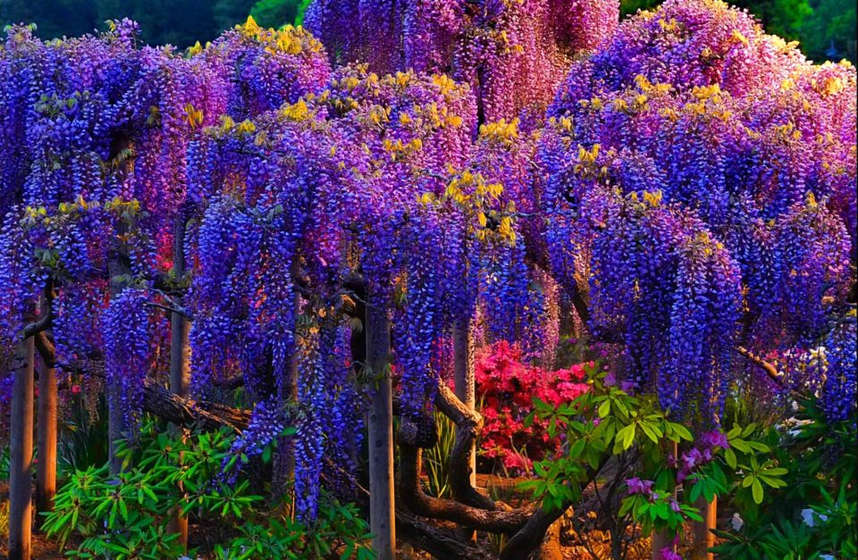
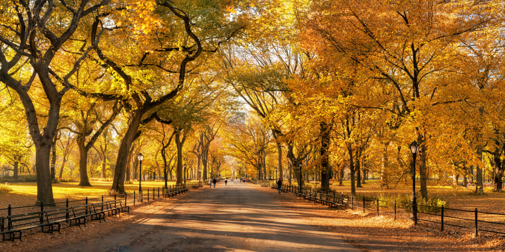
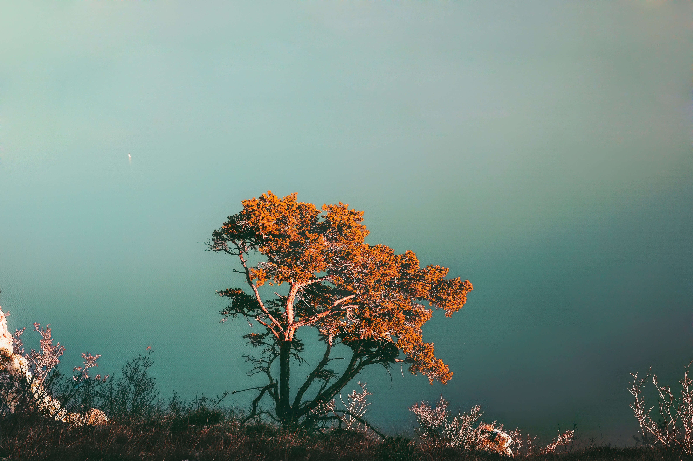

Some beautiful pictures of scenes with lovely trees
Green Trees
This can easily be the best wallpaper.

Colorful Trees
Who says trees have to be only green and yellow.

Yellow Trees
This can easily be rumoured as sunshine.
Introduction
These are some of the biggest shopping centers in Melbourne, they are homes to hundreds of designer stores.
They have everything you can possible want; banks, restaurant, shoe stores, grocery shopping, book store, pharmacy
etc.
Below are beautiful pictures of trees as shared by my Unit chair for Web Technologies and Development.
They presentation of this pictures utilizes a bootstrap row
consisting of three columns. It has class
img-thumbnail applied to it and this allows it to resize to the
column whenever the page is adjusted
The last section was amazing, wasn't it? We were able to show thumbnail images in one row, ensuring that it
responsive. So no matter the device you are using, you can definitely have a good view of this web page.
Now we would put texts along with the images, the text will span through col-sm-8
and the images, col-sm-4.

This is a picture of a tree by Cristina Gottardi
The way the tree bends to the move of the wind is so relaxing to watch.
This image by Cristina Gottardi is a masterpiece and is used to show how images and text are used
in a bootstrap webpage. To make the paragraph stand out, the class =
lead
was used and to reduce the content of the paragraph, class =
small was used.
This is the final row, with the previous content reversed to put the text before the image.
This is a picture of a tree by Brandon Green
This is another lovely tree image that has the class
img-fluid rounded-pill applied to it.
All 12 of the world's largest trees are Giant sequoias. Grogan's Fault, the largest living
Coast redwood, would rank as the 13th largest living tree. Tāne Mahuta, the largest living
tree outside of California, would rank within the top 100 largest living trees. This
data was gotten from Wikipedias List of Superlative Trees.
I believe that other trees will be found out as researchers continue their quest in this ever changing world. We
will
try as much as possible to keep this page updated as new tall trees are discovered.